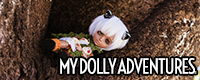
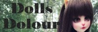
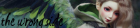
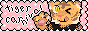
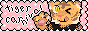

links (for doll lovers only)
VIP (Very Interesting People)
My little hall of fame.
- oooperaa - I can't stop thinking about Scott and Zelda Fitzgerald. I am obsessed!!!
- Glace Leau - She's shelled 2 of her gay criminal OCs, Tennant and Daniel, with custom heads and partially custom bodies. It's really wild. What will Glace Leau come up with next?! I can't wait to find out.
- kotonokazu - ホモォ・・・┌（┌＾o＾）┐
- kakuso - A very strange and skilled doll maker and customizer. She has become too powerful for this Earth.
- Kinoko Juice Kame and Codi - Check out Kame's feed for photos of Komugi the pug. Check out Codi's for KJ doll progress.
- hiritai - Her dolls were insanely influential on my taste when I started collecting. Old DA: oki-oki
BJD owners on Neocities
- Cheesecake Dreams
- Clover's Room
- Mermaidgrey
- TroubleInTheMessageCentre
- Licorice Strudel's Homepage (empty)
- Des Dolls
- mir.moe
- illuminesce
Other doll owners on Neocities
- Petra's Website- Obitsu Chara
- Candy Wrapper- Pullips and other fashion dolls
Unofficial BJD Reference Sites
- Tenshi no Kichi - Volks. Covers a lot of topics! Events, pages for each doll sculpt with info on one-off models released. A bit of info on FCS, not really any photos though. Good place to waste time looking at the limited doll you want!
- ningyoBINGO's Neo Angel Den - Volks. English FCS guide. Based off of Angel Den with updated information. Lots of photos so you can dream about going to Japan and ordering an FCS doll.
- Angel Den - Volks. The original FCS guide in English. Also has an area for every standard and limited model doll. Stopped being updated in Sep 2012. No photos anymore. Thanks for your hard work seraphim! If you need an icon for your DoA signature, she's got you covered.
- Cerberus Project BJD Database - CP. Database of dolls created by early BJD sculptors that would eventually become Fairyland. I wish you luck in creating your own personal El army.
- BJD Genderless Elfs - Compiled by MiKiL. Last updated 2011.
- Modern Asian Ball Jointed Dolls (archived) - List of all currently available BJDs. Last updated January 2008.
- SuperDollfie Wiki - Japanese SD Wiki
English Blogs
- BJD Life - Asenva's blog. She makes a lot of Youtube videos. She's always upbeat and mature and I can really appreciate that!
- Jadepixel Doll Lab - American faceup artist, seamstress, photographer.
- Orchid dolls - Blog of a Spanish DD collector. She posts photography tips in English.
- 
Musume's blog. She has dolly creations, interviews with sculptors, comparisons, cute photography.

Mia's blog. Interviews with sculptors, comparisons, photography.- 
Niina's blog. Looks to be mostly her life with some BJD and playline doll intertwined.
inactive
definition: hasn't been updated in a year as of 10/11/2022
- 
Roterwolkenvogel's blog. Last updated 2020.
- Amaranth's Castaways - Blog of a former recast supporter with lots of articles on identifying recasts as well as issues with confidence, selling, and consumerism. Last updated 2016.
- Pleiades Room - American faceup artist and photographer with a big focus on Volks and vinyl. Now private, but not deleted.
- Aeryn of things; - Blog of an Australian girl, Hiritai, who had some beautiful boy dolls. The inspiration of many young doll fujoshis. Last updated 2011.
- Raw Resin - Blog of a French customizer, Bluoxyde. She went from customizing BJDs to sculpting her own. Last updated 2016.
- Resin Wonderland - Blog of a Danish collector. Owns BJD and Pureneemo. Her background turns pink as you scroll?! Last updated 2017.
- Resin Wonderland - Blog of a German collector. Some posts are in English, some in German. Last updated 2019.
- Tsukifly - Blog of a doll seamstress. Some updates on her doll designs and other photos of her dolls. Last updated 2019.

Blog of a (hopefully recovered) IRC addict. She has some bluefairies (obviously) and some other minis and tinies. Last updated 2019.
English websites
many of these have been lost to time! Most went with the larger banner style instead of buttons.
- Val's World - Written by a doll collector who passed away in 2020.
- Mother of Changes - Tons of photos!
- zucchini - She has the exact same taste in dolls as me. If you like my dolls, you'll like her dolls. I like her dolls a lot.
Archived doll webpages
gone but (not) forgotten
- Armeleialand - The blog of former DoA moderator Armeleia. Possibly current owner. Lots of juicy history lives archived here. Try looking at the tag "DoA Scandals". The site appears to be "hacked" in later archives. A lot of phrases are replaced with stuff about pharmaceuticals and I doubt Armeleia had anything to do with that. My favorite post is Museum of Copies and Inspiration.
- linuxhacker.ru - English and Russian. Disappeared rather recently, but last updated in 2018. Includes dollpa photos! Here is their flickr. Possibly based out of Tennessee.
- elphsnt's My Dolls and Bears - English and Japanese. Japan based collector with many beautiful Volks girls whose names all begin with the letter A. I really did like this site but she seems to have called it quits on blogging.
Japanese Blogs and Websites
- たいたんnoページ - I could but this under photographers, but it's really an event report blog. Hasn't been updated since 2016.
- Pepito - Lots of nendo and Volks doll blogging. Very cute! Has a few beautiful one-off girls.
- nachidiary - Owns the only SD Michele I have ever liked.
- Ma belle lune - Beautiful men in thin lacy gowns.
- orderhouse-M - Sculptor? Photographer? idk I can't read
- Nunodoll - Tutorial on how to make a cute fabric doll! I used this to make Ryan a Takane doll a few years ago. Not BJD related.
- AUC coco girly - Japanese faceup artist. Used to own a bunch of gyaru Unoa girls but mostly posts DDs these days.
- S-Eternal Maiden - Seamstress. Classic web design and image editing.
- kotonokazu - Japanese doll photographer and doll tailor. Beautiful Volks boys! Fujos should check this guy(?) out.
- Madchen Arcadia - Gallery of a Japanese doll photographer. Old Volks girls and Azone.
Archived
Korean Blogs and Websites
- Denes - Korean sculptor that has sculpted for many Korean doll companies.
Chinese Blogs and Websites
- Expensive Garbage - The site of a Chinese doll sculptor. Tells the story of her life through 6 dolls she has sculpted. Available in English
Flickr
- Zodake - Thai DD photographer. Owns a doll cafe. Photoshop wizard and Miku fanatic. Before you ask, all the joints are photoshopped out.
- nono nogisaka - Japanese DD photographer. Lots of landscapes with dolls in TOAClaris clothes.
- nisshi - Japanese DD photographer. More pretty girls in landscapes.
- Haze Jin - Owner of Kaleidoll, clothes designer, and faceup artist. Gorgeous DDs and SD girls in mostly modern girly styles.
- Tom Beach - Depression era doll photographer. This dude follows his dreams.
- bottlefairy - Japanese DD photographer. I think this dude owns a lot of Sabers. Like at least 5. Some photos are NSFW.
- manjuu NEW - Japanese DD photographer. Dynamic poses sometimes with weapons. Some photos are NSFW.
- You 索尼大法好 - Chinese doll and owner photos. Very cute! Last updated 2017
- Nadine - goofy facebook meme tier photos of dolls. Somehow very endearing.
- Follow-the-Wind - French customizer who owns some awesome oni dolls
YouTube Channels
- Inari Passenger - Russian girl living in Tokyo. She has some very detailed box openings of Japanese dolls including Volks and Azone.
- Rokuドールch - Sewing and doll crafting videos in Japanese.
- AsenvaBJD - Once famous for JunkySpot Obitsu reviews. Still making videos about having fun with her dolls. She's good at not getting into drama.
- Lomi's Playground - This girl has better sewing techniques than I do. She has patterns available for most if not all of her sewing tutorials. She seems to have a lot of fun customizing her dolls!
- Shoutan - Ya'll are gonna have to explain this one to me. Man feeds doll? Hires voice actress for doll? Why does he have fried chicken so close to her face.
- Anemoia Dolls - Finnish collector who goes a little nuts with her custom outfits. Her dolls definitely feel spoiled!!
- Mina & Tachibana - Two best friends from Hong Kong. If you want to watch 2 girls open some stupidly expensive dolls and outfits, check these girls out. They are friend goals. Many of their BJD videos have English subs.
- 夜貓蜜語Cat in the midnight club - Two collectors from Hong Kong who are a space bunny and cat. Some videos have English subs!
- _S魚魚 sfishfish_ - Doll photographer from Hong Kong who has a few unboxing videos for dolls but a lot of unboxing videos for beautiful outfits. She obviously loves her MNF Rin very much. Many of her videos have English subs!
- Melara BJD Studio - Doll collector from China(?) that collects mostly 1/6 scale mature BJDs and does box opening for their outfits. I don't think any of her videos have English subs.
- 用艺原创工坊 - Chinese(?) collector that has a lot of dolls that don't fit my tastes. No videos have English subs.
- 缨满月 - Chinese(?) face up artist. Also does faceups on silicone sex dolls. Also a sculptor? No English subs.
- 缨满月 - Singapore photographer. There's a lot of puppy videos that I can't tell are savory to an American audience. Makes resin eyes. Friends with sfishfish? No English subs.
Twitter users
- C's Studio Catch - Japanese customizer with some beautiful Volks repaints. Her F-87 boy is a looker!!
- JirA - Japanese customizer who does some natural/sickly looking faceups. Highly textured!
- Chii - Japanese photographer who I believe also is a faceup artist and seamstress. Owns 2 (two) Lunas among other dolls.
- Lemulia - Japanese seamstress. Incredibly fluffy lacy dresses! Owns two Lieselottes. Isn't great at photography but makes up for it in insane dresses.
- Roja Dean - Korean faceup artist. Extremely detailed. Expect to see many handsome boys. Also has a Youtube channel with subs in English and Japanese (on most).
- Johnny Director - Japanese cowboy doll photographer.
- Garasu - Tasteful nudity warning. beautiful dolls in a beautiful set. everything is so detailed and gorgeous. men are in dresses. Very dreamy. owns a crobi sleeping lance, switch soseo, 2 sdgr kasumi, and 2 f-40s
- Iretaro - Non-stop self portaits of a girl with her AP doll.
- Kim - Korean girl. I get the feeling she has a lot of money. Mature, sexy, or detailed describes a lot of her photos. Somehow finds HUGE nail hands. Has a Mytyl, Suigintou, F-63, Jun Tachibana + more.
- Akae - Japanese photographer with many gorgeous Volks girls in frilly detailed dresses.
- 응공 - Korean collector. Owns dolls of Scott (SDGou Alain) and Zelda (SD17 Kai) Fitzgerald. The twist: Zelda is a man and Scott is the prince of Wales. Recreates a lot of cinematography stills with her dolls. Has yearly weddings for her boys. If you see this, please invite me next year.
- Narupajin - Owner of the strangest Miku dollfie. She really loves Miku.
- NayeONE - Creator of an OC named Noah. She has shelled Noah in about 30 doll forms. It's insane. Here's a video interview with her.
Photos on social media
Some Japanese hashtags and my attempt at translation. I don't speak any Japanese btw. Try searching on Flickr, Twitter, and Instagram. Many dealers and artists also have their own hashtag that buyers will post under. Many Super Dollfie sculpts also have their own hashtag such as #SD_f_63 or #SD63番 (numbered sculpts) or #SDリズ (sculpts with names). There's a few variations on the format though.
secret links i use to look at cute doll on twitter
no really i just dont want to track down the characters on my phone. these links are all 100% catered to my tastes. i think i broke the links sorry
 
